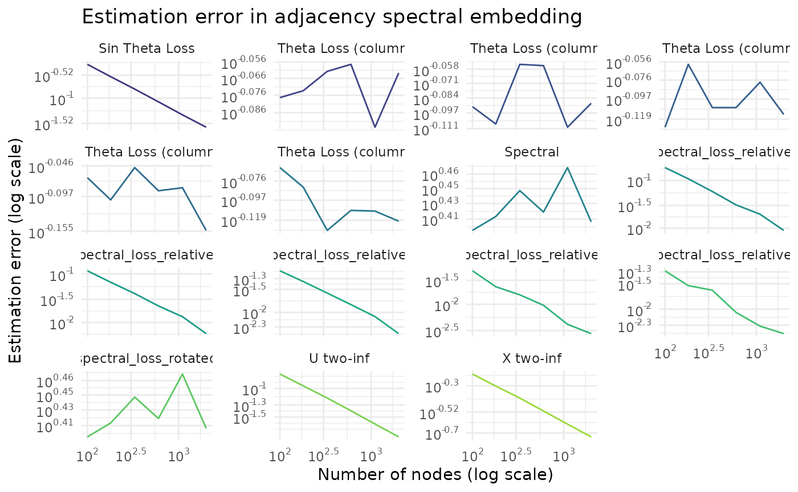
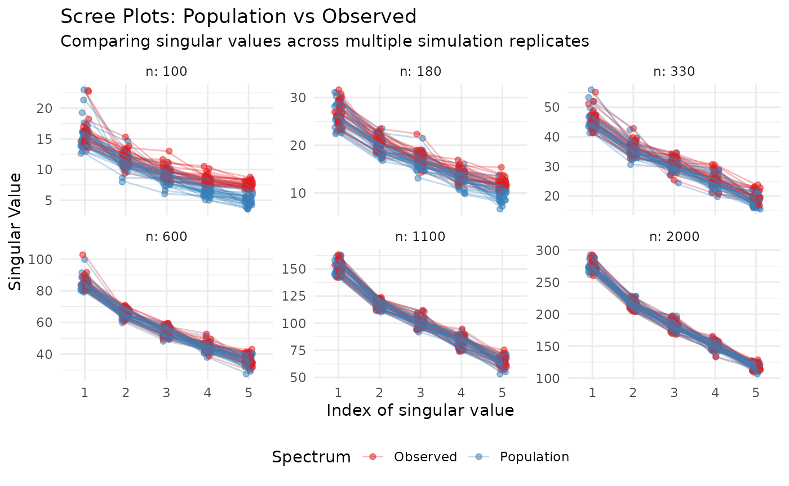

In this vignette we demonstrate how to use the fastRG
package to study the finite sample performance of two spectral
estimators, the Adjacency Spectral Embedding and the Laplacian Spectral
Embedding.
We’ll consider how these estimators perform in two different cases: a stochastic blockmodel where the signal eigenvalues are all well-separated, and a stochastic blockmodel with exactly repeated eigenvalues. We define the data generating process as follows:
library(dplyr)
library(ggplot2)
library(fastRG)
library(irlba)
library(Matrix)
library(purrr)
library(scales)
library(tidyr)
set.seed(27)
model_distinct <- function(n, k = 5) {
B <- matrix(0.05, nrow = k, ncol = k)
diag(B) <- seq(0.8, 0.4, length.out = k)
latent <- dcsbm(
theta = rexp(n) + 1,
B = B,
expected_degree = 0.1 * n
)
}
model_repeated <- function(n, k = 5) {
latent <- dcsbm(
theta = rep(1, n),
B = diag(0.5, k),
expected_degree = 0.1 * n
)
}Now, if we want to compare the population singular values of the distinct eigenvalue model with the sample singular values, we could do so as follows:
# sample the latent parameters of the blockmodel
latent <- model_distinct(1000)
# compute the population singular value decomposition of the blockmodel
s_pop <- svds(latent)
# sample a network conditional on the latent factors
A <- sample_sparse(latent)
# singular value decomposition of the observed network
s_obs <- irlba(A, 5)
# difference between population and sample singular values
s_pop$d - s_obs$d
#> [1] -0.6686638 -1.3409713 -2.3022241 0.8946001 -3.6481462That’s really it! To run a short simulation study, most of the remaining work comes down to choosing various losses that you want to compute and implemeting them in. The following chunk computes several losses that we might care about:
- sin Theta loss for subspace spanned by all the singular vectors
- sin Theta loss for each individual singular vector
- two-to-infinity loss of the singular vectors, both scaled and unscaled by the square root of the singular values
- the spectral norm of the difference between the population and sample singular values
sin_theta_distance <- function(u, v) {
s <- svd(crossprod(u, v))
ncol(u) - sum(s$d^2)
}
find_procrustes_rotation <- function(X, Y) {
s <- svd(crossprod(X, Y))
tcrossprod(s$v, s$u) # NOTE U, V swap versus next one
}
procrustes_align <- function(X, Y) {
s <- svd(crossprod(X, Y))
rotation <- tcrossprod(s$v, s$u)
Y %*% rotation
}
two_to_infinity_loss <- function(X, Y) {
s <- svd(crossprod(X, Y))
rotation <- tcrossprod(s$v, s$u)
Yrot <- Y %*% rotation
diff <- X - Yrot
max(sqrt(Matrix::rowSums(diff^2)))
}
loss_helper <- function(s_pop, s_obs) {
u_pop <- s_pop$u
u_obs <- s_obs$u
d_pop <- s_pop$d
d_obs <- s_obs$d
x_pop <- u_pop %*% sqrt(diag(d_pop))
x_obs <- u_obs %*% sqrt(diag(d_obs))
# spectral norm difference of pop and obs, simplified computation
# since d_pop and d_obs are diagonal
spectral_loss <- max(abs(d_pop - d_obs))
spectral_loss <- norm(diag(d_pop) - diag(d_obs), type = "F")
spectral_loss_relative <- abs(d_pop - d_obs) / d_pop
Wstar <- find_procrustes_rotation(u_pop, u_obs)
spectral_loss_rotated <- norm(Wstar %*% diag(d_obs) - diag(d_pop) %*% Wstar, type = "F")
k <- ncol(u_pop)
column_sin_theta_loss <- map_dbl(
1:k,
\(j) {
sin_theta_distance(u_pop[, j, drop = FALSE], u_obs[, j, drop = FALSE])
}
)
tibble(
sin_theta_loss = sin_theta_distance(u_pop, u_obs),
u_two_inf_loss = two_to_infinity_loss(u_pop, u_obs),
x_two_inf_loss = two_to_infinity_loss(x_pop, x_obs),
spectral_loss = spectral_loss,
spectral_loss_rotated = spectral_loss_rotated,
spectral_loss_relative1 = spectral_loss_relative[1],
spectral_loss_relative2 = spectral_loss_relative[2],
spectral_loss_relative3 = spectral_loss_relative[3],
spectral_loss_relative4 = spectral_loss_relative[4],
spectral_loss_relative5 = spectral_loss_relative[5],
sin_theta_loss1 = column_sin_theta_loss[1],
sin_theta_loss2 = column_sin_theta_loss[2],
sin_theta_loss3 = column_sin_theta_loss[3],
sin_theta_loss4 = column_sin_theta_loss[4],
sin_theta_loss5 = column_sin_theta_loss[5]
)
}With these tools in handle, we can define a simulation runner. Since this is just a basic simulation, we aren’t too worried about computational efficiency, and we create a grid of sample sizes, crossed with replication indices. Then we compute out hearts out.
run_simulation <- function(model, num_reps = 30) {
expand_grid(
n = c(100, 180, 330, 600, 1100, 2000),
reps = 1:num_reps
) |>
mutate(
pop = map(n, model),
s_pop = map(pop, svds),
A = map(pop, sample_sparse),
s_obs = map(A, irlba, 5), # rank five svd,
loss = map2(s_pop, s_obs, loss_helper)
)
}
sims <- run_simulation(model_distinct)
sims
#> # A tibble: 180 × 7
#> n reps pop s_pop A s_obs loss
#> <dbl> <int> <list> <list> <list> <list> <list>
#> 1 100 1 <undrctd_> <named list> <dsCMatrx[,100]> <named list> <tibble>
#> 2 100 2 <undrctd_> <named list> <dsCMatrx[,100]> <named list> <tibble>
#> 3 100 3 <undrctd_> <named list> <dsCMatrx[,100]> <named list> <tibble>
#> 4 100 4 <undrctd_> <named list> <dsCMatrx[,100]> <named list> <tibble>
#> 5 100 5 <undrctd_> <named list> <dsCMatrx[,100]> <named list> <tibble>
#> 6 100 6 <undrctd_> <named list> <dsCMatrx[,100]> <named list> <tibble>
#> 7 100 7 <undrctd_> <named list> <dsCMatrx[,100]> <named list> <tibble>
#> 8 100 8 <undrctd_> <named list> <dsCMatrx[,100]> <named list> <tibble>
#> 9 100 9 <undrctd_> <named list> <dsCMatrx[,100]> <named list> <tibble>
#> 10 100 10 <undrctd_> <named list> <dsCMatrx[,100]> <named list> <tibble>
#> # ℹ 170 more rowsNow we’d like to summarize the results across the 30 different runs of the simulation, so we write a short helper to do this as well.
summarize_simulations <- function(sims) {
sims |>
unnest_wider(c(loss)) |>
select(contains("loss"), everything()) |>
summarize(
across(contains("loss"), mean),
.by = n
) |>
pivot_longer(
contains("loss"),
names_to = "loss_type",
values_to = "loss"
) |>
mutate(
loss_type = recode(
loss_type,
"sin_theta_loss" = "Sin Theta Loss",
"u_two_inf_loss" = "U two-inf",
"x_two_inf_loss" = "X two-inf",
"spectral_loss" = "Spectral",
"sin_theta_loss1" = "Sin Theta Loss (column 1)",
"sin_theta_loss2" = "Sin Theta Loss (column 2)",
"sin_theta_loss3" = "Sin Theta Loss (column 3)",
"sin_theta_loss4" = "Sin Theta Loss (column 4)",
"sin_theta_loss5" = "Sin Theta Loss (column 5)"
)
)
}
results <- summarize_simulations(sims)
results
#> # A tibble: 90 × 3
#> n loss_type loss
#> <dbl> <chr> <dbl>
#> 1 100 Sin Theta Loss 1.78
#> 2 100 U two-inf 0.538
#> 3 100 X two-inf 1.53
#> 4 100 Spectral 3.78
#> 5 100 spectral_loss_rotated 4.42
#> 6 100 spectral_loss_relative1 0.0538
#> 7 100 spectral_loss_relative2 0.101
#> 8 100 spectral_loss_relative3 0.137
#> 9 100 spectral_loss_relative4 0.294
#> 10 100 spectral_loss_relative5 0.513
#> # ℹ 80 more rowsAnd now that we have our results, all that remains is to plot them.
plot_results <- function(results) {
results |>
ggplot() +
aes(x = n, y = loss, color = loss_type) +
geom_line() +
scale_x_log10(labels = label_log(digits = 2)) +
scale_y_log10(labels = label_log(digits = 2)) +
scale_color_viridis_d(begin = 0.15, end = 0.85, guide = "none") +
facet_wrap(vars(loss_type), scales = "free_y") +
labs(
title = "Estimation error in adjacency spectral embedding",
y = "Estimation error (log scale)",
x = "Number of nodes (log scale)"
) +
theme_minimal()
}
plot_results(results)
Here we see that all of our losses are decreasing except for the spectral loss, which is exactly what we would expect from theory.
Since we defined helpers to run the simulations for us, when we want to see results for the model with repeated eigenvalues, it’s as straightforward as:
model_repeated |>
run_simulation() |>
summarize_simulations() |>
plot_results()
Now we see that we can only recover the subspace spanned by the singular vectors, but not the singular vectors themselves, exactly as expected.
spectral_df <- sims |>
mutate(
diagnostics = map2(s_pop, s_obs, function(pop, obs) {
tibble(
rank = 1:length(pop$d),
val_pop = pop$d,
val_obs = obs$d
)
})
) |>
select(n, reps, diagnostics) |>
unnest(diagnostics)
plot_all_scree <- function(spectral_df) {
spectral_df |>
pivot_longer(
cols = c(val_pop, val_obs),
names_to = "type",
values_to = "value"
) |>
mutate(type = recode(type, val_pop = "Population", val_obs = "Observed")) |>
ggplot(aes(x = factor(rank), y = value, color = type, group = interaction(reps, type))) +
# Jitter slightly to show overlapping replicates
geom_point(position = position_jitter(width = 0.1), alpha = 0.5, size = 1.5) +
geom_line(alpha = 0.3) +
facet_wrap(~ n, scales = "free_y", labeller = label_both) +
scale_color_manual(values = c("Population" = "#377eb8", "Observed" = "#e41a1c")) +
labs(
title = "Scree Plots: Population vs Observed",
subtitle = "Comparing singular values across multiple simulation replicates",
x = "Rank (Index)",
y = "Singular Value Magnitude",
color = "Spectrum"
) +
theme_minimal() +
theme(legend.position = "bottom")
}
plot_all_scree(spectral_df)
Here’s one last trick. We might also be interested in using a
different estimator, the Laplacian Spectral Embedding, to recover the
singular value decomposition of the expected (degree-normalized,
regularized) graph Laplacian. This is also straightforward using
fastRG.
graph_laplacian <- function(A) {
degrees <- rowSums(A)
tau <- mean(degrees)
DA <- rowScale(A, 1 / sqrt(degrees + tau))
colScale(DA, 1 / sqrt(degrees + tau))
}
svds_laplacian <- function(pop) {
# regularize by expected mean degree (scalar)
tau <- expected_degree(pop)
# vector!!
degrees_pop <- expected_degrees(pop)
# rescale X in the population model so that XSX' is the expected
# graph Laplacian. we can't use this to sample networks anymore, but
# we can use it to bootstrap a population SVD calculation
pop$X <- rowScale(pop$X, 1 / sqrt(degrees_pop + tau))
svds(pop)
}
run_laplacian_simulation <- function(model, num_reps = 30) {
expand_grid(
n = c(100, 180, 330, 600, 1100, 2000),
reps = 1:num_reps
) |>
mutate(
pop = map(n, model),
s_pop = map(pop, svds_laplacian),
A = map(pop, sample_sparse),
L = map(A, graph_laplacian),
s_obs = map(L, irlba, 5), # rank five svd,
loss = map2(s_pop, s_obs, loss_helper)
)
}With our helpers defined we’re once again off to the races and see that Laplacian Spectral Embedding also does well
model_distinct |>
run_laplacian_simulation() |>
summarize_simulations() |>
plot_results()